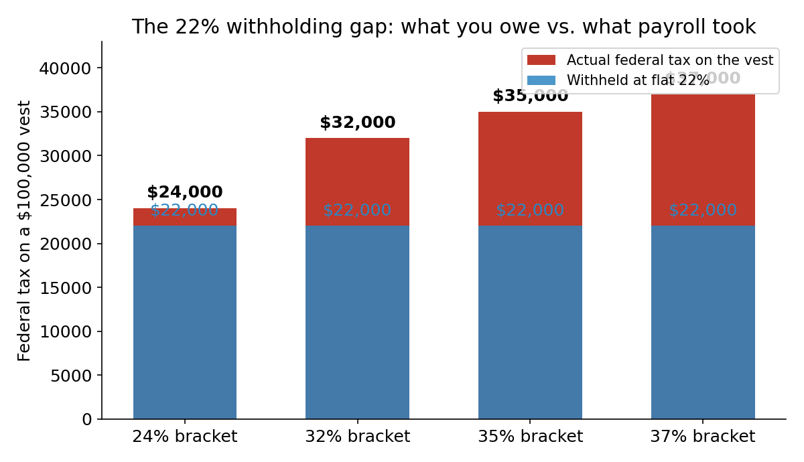
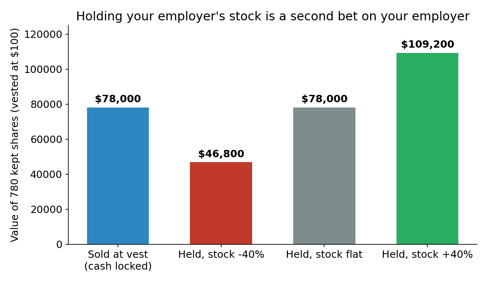
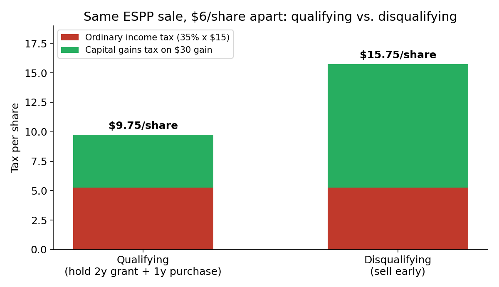

For a lot of H-1B tech workers, equity is the biggest line on the offer letter — and the least understood line on the tax return. RSUs feel like a bonus. The ESPP feels like free money. Neither is free, and both have traps that only bite people whose paycheck and whose portfolio come from the same company.
Here is the whole game, with numbers.
Part 1: RSUs — taxed at vest, whether you sell or not
An RSU is a promise: stay, and shares become yours on a schedule. The day they vest, the IRS treats the full market value as wages. It lands in Box 1 of your W-2, it is subject to Social Security and Medicare tax, and it is taxed at your ordinary marginal rate — not the capital-gains rate, no matter how long you held the promise.
Worked example: 1,000 shares vest at $100.
- Wage income at vest: $100,000.
- Sell-to-cover: your employer sells 220 shares to cover the flat 22% federal withholding. You keep 780 shares with a cost basis of $100 each.
- The trap: if your marginal bracket is 35%, your actual federal tax on that vest is $35,000. Payroll withheld $22,000. You owe $13,000 when you file — and the IRS expected it during the year, not next April.

This gap is structural, not a mistake. Employers withhold supplemental wages at a flat 22% federal rate (37% on supplemental wages above $1 million from that employer in the year), regardless of your W-4 and regardless of your actual bracket. In California, state withholding on supplemental wages adds roughly another 10.23% on top. The fix is boring and it works: after a big vest, either bump your W-4 extra withholding for the remaining pay periods or send an estimated payment by the next quarterly due date. The safe harbor is the smaller of 90% of this year's tax or 110% of last year's tax (if last year's AGI topped $150,000) — hit it and there is no underpayment penalty even if a balance remains.
The $0-basis trap: don't pay tax on your RSUs twice
This one costs real people real money every April. Your broker's 1099-B often reports the sale of vested RSU shares with a cost basis of $0 — because the broker only tracks what you paid out of pocket, which was nothing. But you already paid tax on the vest value: your basis is the vest-day price, $100 a share in our example.
- Sell 780 shares at $130: proceeds $101,400, true basis $78,000, true long-term gain $23,400.
- With a $0 basis on the 1099-B, the IRS computer sees a $101,400 gain — $78,000 overstated.
- Fix it on Form 8949 with adjustment code B, entering the correct basis. If you skip this step, you pay tax twice on the same dollars: once as wages at vest, once as phantom gains at sale.
Download every vest confirmation and keep a running basis log. Reconstructing it from a brokerage portal three years later is miserable; doing it the week of the vest takes two minutes.
Sell or hold? The default answer is sell
Holding vested RSUs is not "letting your winners run." It is concentrating risk: your salary, your unvested equity, your professional network, and now your portfolio all depend on one company's fortunes. If that company has a bad year, you can lose your job and your savings in the same quarter — and on an H-1B, the job loss also starts a 60-day grace-period clock.

Selling at vest locks in the vest value as cash. There is no extra tax cost to selling immediately: the vest value was already taxed as wages, and a same-day sale produces essentially zero additional gain. Holding only makes sense as a deliberate, sized decision — say, keeping no more than 10% of your net worth in any single stock, employer included. "I'll sell when it recovers" is not a plan; it is how a $100,000 vest becomes a $46,800 regret.
Part 2: ESPP — the 15% discount with two clocks
A qualified (Section 423) ESPP lets you buy your employer's stock at up to a 15% discount, usually off the lower of the price at the offering date or the purchase date (a "lookback"). No tax at grant, no tax at purchase — everything is settled at sale. Two limits matter:
- The $25,000 cap. You cannot accrue rights to more than $25,000 of stock per calendar year, measured at the stock's fair market value on the grant date — not the discounted price you pay. At a $100 grant-date price, that is 500 shares, period.
- The two clocks. A qualifying disposition requires holding more than 2 years from the grant date AND more than 1 year from the purchase date. Miss either clock and it is a disqualifying disposition.
Same shares, same sale price — very different tax bill. Buy at $85 (grant-date value $100, 15% discount), sell at $130, 35% ordinary bracket, 15% long-term gains rate:
- Qualifying: ordinary income is the lesser of the $15 grant-date discount or the $45 actual gain — $15. The remaining $30 is long-term gain. Tax: $5.25 + $4.50 = $9.75 per share.
- Disqualifying: the full $15 purchase-date spread is ordinary income, and the $30 remainder is taxed as a capital gain — short-term (35%) if you sold within a year. Tax: $5.25 + $10.50 = $15.75 per share.

That $6-per-share gap is the price of impatience — and note the nastiest ESPP rule of all: in a disqualifying sale, the ordinary income is the full purchase-date spread even if the stock fell after purchase. Sell at $55 after buying at $42.50 with a $60 purchase-date value, and you still owe ordinary tax on $17.50 a share while booking only a $5 capital loss. The discount is not free money until the sale is final.
Practical ESPP playbook: enroll up to the full discount if cash flow allows (it is a 17.6% instant return on your contribution at a 15% discount — $85 buys $100 of stock), sell promptly if you don't want single-stock risk (a disqualifying sale still banks most of the discount), and only chase qualifying treatment when the holding period fits a position you would hold anyway.
The H-1B-specific traps
Equity hits visa holders differently in four ways:
- Layoff forfeits the unvested. Unvested RSUs generally vanish on termination — the 60-day grace period does not keep vesting you, and no new vest date arrives while you job-hunt. Know your next two vest dates the way you know your rent due date; a layoff one week before a vest is a five-figure difference.
- ESPP participation ends with employment. Leave mid-offering and your contributions are typically refunded, not converted to shares. Don't count an in-flight offering period as money.
- Equity doesn't replace wages. Your employer still has to pay the required cash wage for your H-1B — stock grants don't substitute for it. If an offer leans heavily on equity with a low base, check the base against the prevailing wage, not the headline total.
- You can't freelance your way out of a bad vest. H-1B status ties your work authorization to your sponsoring employer. Side income to cover a tax gap — consulting, a second job, a side business — is off-limits. The tax bill on a big vest has to be covered from your own cash flow, which is exactly why the withholding gap in Part 1 deserves a plan before vest day, not after.
What not to do
- Don't let a vest surprise you in April. A $100,000 vest at a 35% bracket with 22% withheld is a $13,000 bill. Budget it the week it vests.
- Don't file a 1099-B with a $0 basis. Check every RSU sale against your vest confirmations and fix it on Form 8949, code B.
- Don't hold your employer's stock by default. Vested shares are cash that happens to be shaped like stock. If you wouldn't buy that much of your employer's stock with cash, don't keep it.
- Don't chase a qualifying ESPP disposition with money you can't afford to watch fall. Two years is a long time to hold one stock for a $6-per-share tax saving.
- Don't assume the ESPP discount is risk-free. A disqualifying sale after a price drop can tax you on a spread you never actually pocketed.
- Don't count unvested RSUs as savings. They are $0 until they vest, and a layoff zeroes them instantly.
Takeaways
- RSUs are wages at vest: $100,000 vested at a 35% bracket means $35,000 of federal tax, but only $22,000 withheld — the $13,000 gap is yours to plan for.
- Your RSU cost basis is the vest-day price, not $0 — fix the 1099-B on Form 8949 or pay tax twice.
- Selling at vest costs nothing extra in tax and kills single-stock risk; holding is a second bet on your employer.
- ESPP: 15% discount, $25,000 annual cap at grant-date value, and two clocks (2 years from grant, 1 year from purchase) decide whether your gain is taxed at $9.75 or $15.75 a share.
- On an H-1B, unvested equity dies with the job — know your next vest dates, and never let a tax bill depend on income the visa doesn't let you earn.
This post is for education only — not tax, legal, or investment advice. Immigration questions need an immigration attorney.